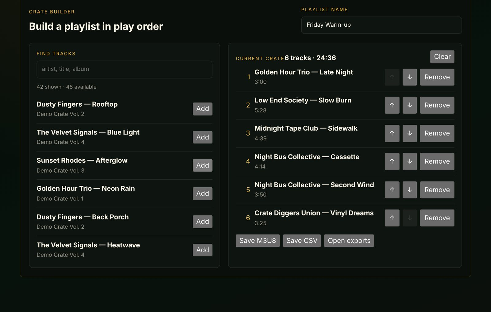
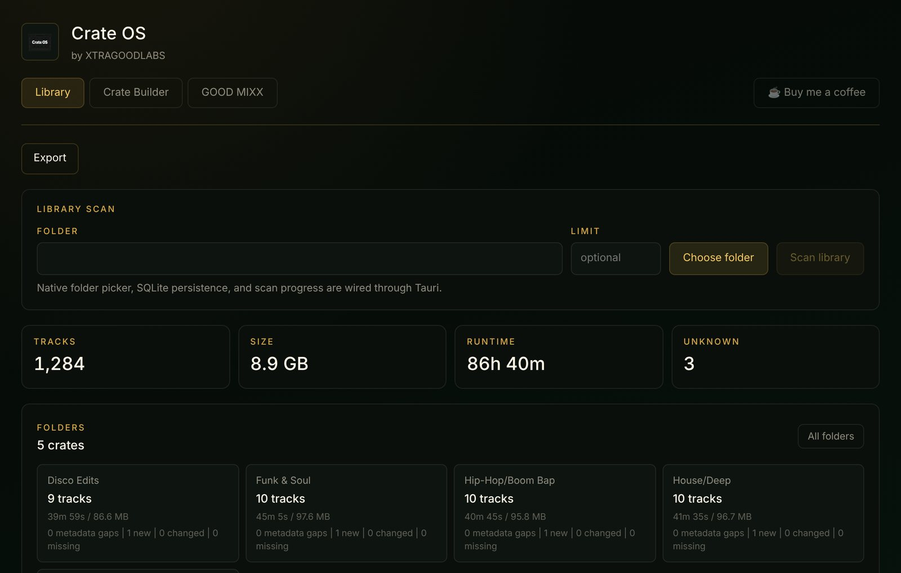
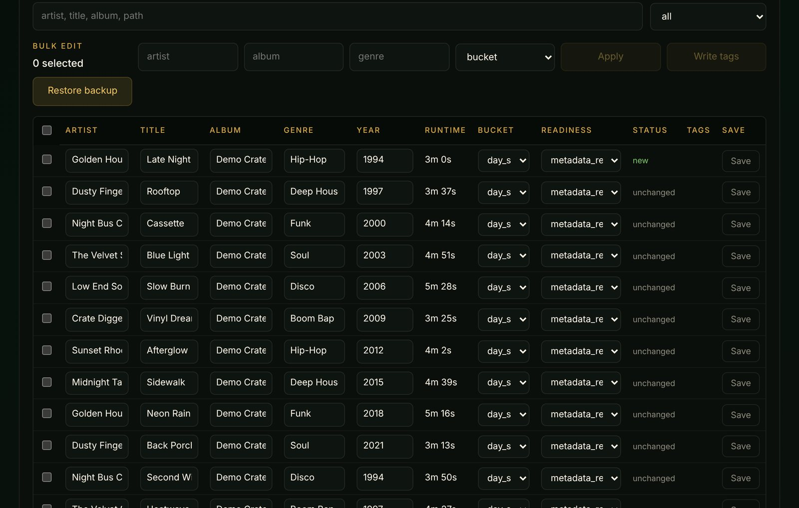

Your music. Your crates.
Crate OS scans your music library, helps you clean up the tags, and lets you build crates in play order. GOOD MIXX comes built in, so it remembers the blends that work and suggests what to play next.
Free beta. No account. Your library never leaves your Mac.

One app for the music you actually play.
Know your library
Scans your folders and shows tracks, size, runtime, and what's missing tags, folder by folder.
Fix your tags
Edit artist, title, genre and year in place, or bulk-edit a selection. A backup lets you undo tag writes.
Crate Builder
Search your library, add tracks, set the play order, and save the crate as M3U8 or CSV.
Your library, at a glance.


GOOD MIXX, built in.
Remembers good blends
Follows DJAY or TRAKTOR, saves blends with one tap, and suggests what to play next.
Take it anywhere
CSV, DJ-prep CSV, M3U8 and JSON exports.
iPad or Portal
Optional protected link so an iPad or Meta Portal can show GOOD MIXX.
Getting it running
- Download and unzipGrab the Crate OS zip from the download button and double-click it.
- Drag it to ApplicationsJust like any other Mac app.
- Open it the first timeThis beta isn't from the App Store yet, so Control-click Crate OS, choose Open, then confirm.
- Point it at your musicChoose your music folder and hit Scan library.
- Optional: hook up your DJ appFor GOOD MIXX key readings, allow Crate OS under Privacy & Security → Accessibility. For TRAKTOR, use Add Traktor link in GOOD MIXX.
- An Apple Silicon Mac (M-series)
- Your music in a folder on that Mac
- Optional: DJAY Pro or TRAKTOR Pro 3/4 for GOOD MIXX
- No Python, Terminal or account needed
Stuck? The full install guide has every detail.
Point it at your library. Tell me what broke.
I'm looking for Mac DJs to scan their real library with Crate OS and tell me what works, what's confusing, and what needs fixing. Rough notes are perfect.
Easiest way to reach me: DM @djhellojoey on Instagram.